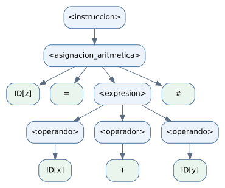

Diseño y validación de una GLC
Desarrollo completo, extensión C y evidencias reproducibles.
1. Identificación formal de la gramática
Laboratorio 3 - Diseño y Validación de Gramáticas
Teoría de la Computación · INFO1148 · 21 de octubre de 2026
Propuesta de solución al enunciado, con decisiones de diseño explícitas y evidencias ejecutables. La actividad se describe como trabajo en parejas y entrega de informe más evidencias; este documento desarrolla sus preguntas y su extensión C.
1. Terminales y clasificación
Separamos el análisis léxico del sintáctico. El léxico reconoce nombres y números concretos; la GLC trabaja con sus categorías ID y NUM. Los otros terminales se escriben por su lexema literal.
| Clase | Terminales | Función |
|---|---|---|
| Palabras reservadas | Begin, Programa, End, salida | Delimitan el programa o introducen una salida. |
| Operadores aritméticos | +, -, *, /, % | Operaciones binarias entre dos operandos. |
| Asignación | = | Separa el identificador destino de su valor o expresión. |
| Símbolo especial | # | Termina una instrucción. |
| Identificadores | ID | Categoría de nombres como x, z2 y operativo_01_02. |
| Números | NUM | Categoría de valores como 20, 0 y 1.345. |
2. No terminales y 3. símbolo inicial
V = {<programa>, <lista_instrucciones>, <instruccion>, <asignacion_simple>, <asignacion_aritmetica>, <expresion>, <operando>, <operador>, <salida>}. El símbolo inicial es S = <programa>.
4. Definición formal
G = (V, Σ, P, S)
Σ = {Begin, Programa, End, salida, ID, NUM, =, #, +, -, *, /, %}
S = <programa>V contiene los nueve no terminales anteriores y Σ los trece terminales indicados. V y Σ son disjuntos. P es el conjunto de producciones de la sección 2. Es una GLC porque el lado izquierdo de cada producción es un único no terminal.
Notación: se conserva el orden G = (V, Σ, P, S) pedido por el laboratorio. En otros apuntes del curso la misma información se ordena como (V_N, V_T, S, P). Aquí V significa el conjunto de no terminales.
Respaldo: enunciado, PDF p. 2, preguntas 1-5; sesion_3_4.pdf, PDF pp. 3 y 8.
Identificadores, números y decisiones léxicas
5. Por qué no enumerar cada nombre o valor
Sería insuficiente listar únicamente x, y, z o 20: también se necesitan nombres nuevos y números de longitud arbitraria. Se usan patrones generales, y cada token conserva el lexema concreto como dato asociado. ID y NUM son terminales de categoría de esta GLC; no se añaden reglas ID → x ni NUM → 20.
L = [A-Za-zÑñÁÉÍÓÚÜáéíóúü]
D = [0-9]
ID = L (L | D | "_")*
NUM = D+ ("." D+)?- Un identificador empieza con una letra; después admite letras, dígitos y guion bajo. Ejemplos: x, z2 y operativo_01_02. La clase L declarada es la convención finita de letras de esta implementación.
- Las reservadas exactas son Begin, Programa, End y salida. Se distinguen mayúsculas y minúsculas. Un nombre más largo, como salida_total, sigue siendo un identificador.
- NUM admite enteros y reales decimales sin signo: 20, 0 y 1.345. Aunque el enunciado usa la palabra positivos, el programa incluye 0; por ello se interpretan como valores no negativos.
- Se requieren dígitos a ambos lados del punto de un real. No se incluyen notación exponencial ni signos unarios.
- Los espacios separan componentes y se descartan. Se admiten comentarios /* ... */ no anidados para representar el comentario del programa de referencia. El comentario no se convierte en una instrucción.
- En modo de extensión, entero y real se añaden al conjunto de reservadas. real es una palabra de tipo; NUM sigue siendo la categoría de un literal numérico.
Una categoría, muchos lexemas
| Texto | Lectura sintáctica |
|---|---|
| x = 20 # | ID[x] = NUM[20] # |
| z = x + y # | ID[z] = ID[x] + ID[y] # |
| salida temporal # | salida ID[temporal] # |
En ID[z], el símbolo terminal es ID y z es su lexema anotado. Esta notación no añade un nuevo terminal por cada nombre. Los corchetes son explicativos y no se escriben en el programa.
Respaldo: enunciado, PDF pp. 1-2; los patrones y la separación de fases son decisiones explícitas de esta propuesta.
2. Construcción de la GLC
6. Producciones de la gramática base
<programa> ::= "Begin" "Programa" ID <lista_instrucciones> "End"
<lista_instrucciones> ::= <instruccion> <lista_instrucciones> | <instruccion>
<instruccion> ::= <asignacion_simple> | <asignacion_aritmetica> | <salida>
<asignacion_simple> ::= ID "=" <operando> "#"
<asignacion_aritmetica> ::= ID "=" <expresion> "#"
<expresion> ::= <operando> <operador> <operando>
<operando> ::= ID | NUM
<operador> ::= "+" | "-" | "*" | "/" | "%"
<salida> ::= "salida" ID "#"7. Diferencia entre las tres instrucciones
| Construcción | Forma | Ejemplo |
|---|---|---|
| Asignación simple | ID = <operando> # | temporal = x # |
| Asignación aritmética | ID = <operando> <operador> <operando> # | z = x + y # |
| Salida | salida ID # | salida z # |
Las alternativas son distinguibles: después del primer operando, # cierra una asignación simple; un operador seguido de otro operando forma una asignación aritmética. salida inicia la tercera clase.
8. Función de los no terminales
| No terminal | Función |
|---|---|
| <programa> | Construye un programa completo con cabecera, cuerpo y cierre. |
| <lista_instrucciones> | Produce una o más instrucciones, conservando su orden. |
| <instruccion> | Selecciona una asignación simple, una aritmética o una salida. |
| <asignacion_simple> | Asigna un identificador o un número a un identificador destino. |
| <asignacion_aritmetica> | Asigna el resultado sintáctico de una operación binaria. |
| <expresion> | Une un operando izquierdo, un operador y un operando derecho. |
| <operando> | Selecciona ID o NUM. |
| <operador> | Selecciona uno de los cinco operadores aritméticos. |
| <salida> | Forma una instrucción salida ID #. |
La lista nunca produce ε: tiene la alternativa de una instrucción y otra que agrega una instrucción delante de una lista. Así permite cualquier cantidad positiva de instrucciones.
Respaldo: enunciado, PDF pp. 2-3, pregunta 2.
Verificación del programa de referencia
9. El programa completo queda representado
La cabecera se reconoce como Begin Programa ID[operativo_01_02], la lista contiene veinte instrucciones y el cierre es End. Tras descartar el comentario y los espacios, cada instrucción coincide con una de las tres alternativas de la gramática.
| Clase | Cantidad | Evidencia del programa |
|---|---|---|
| Asignaciones simples | 6 | x = 1.345 #; y = 20 #; temporal = 0 #; temporal = x #; x = y #; y = temporal # |
| Asignaciones aritméticas | 7 | z y z2 usan +; h y h2 usan -; k usa *; t usa /; m usa %. |
| Salidas | 7 | Se imprimen z, h, k, t, m, x e y. |
| Total | 20 | Las veinte instrucciones terminan en #. |
El validador acepta el archivo completo ejemplos/programa_referencia.txt desde el símbolo inicial <programa>. La evidencia registra 91 tokens y los veinte nodos <instruccion> del árbol.
Alcance elegido
La asignación aritmética contiene exactamente una operación binaria. Esta elección sencilla cubre las estructuras mínimas y todos los ejemplos pedidos. No se agregan paréntesis ni operaciones encadenadas; por ello no hace falta fijar precedencia entre varios operadores de una misma expresión.
| Cadena adicional | Resultado | Razón |
|---|---|---|
| x = a + b * c # | Inválida | Contiene dos operadores en una sola expresión. |
| x = -1 # | Inválida | No se definió signo unario. |
| Begin Programa prueba End | Inválida | La lista debe contener al menos una instrucción. |
Este es un análisis sintáctico. No se calcula el valor de k / z ni se comprueba si una variable fue declarada o si una división puede dar error al ejecutarse.
Respaldo: programa de referencia del enunciado, PDF pp. 1-2; evidencia ejecutada en evidencias/validacion.json.
3. Derivaciones por la izquierda
En cada paso se sustituye el no terminal situado más a la izquierda. Como S = <programa> genera programas completos, las instrucciones aisladas de los puntos 10 y 11 se derivan localmente desde <instruccion>.
10. Derivación de z = x + y #
<instruccion>
⇒ <asignacion_aritmetica>
⇒ ID[z] = <expresion> #
⇒ ID[z] = <operando> <operador> <operando> #
⇒ ID[z] = ID[x] <operador> <operando> #
⇒ ID[z] = ID[x] + <operando> #
⇒ ID[z] = ID[x] + ID[y] #Realización léxica de la última fila: z = x + y #. Las elecciones z, x e y son los valores de los tokens ID; no son nuevas producciones.
11. Derivación de salida z #
<instruccion>
⇒ <salida>
⇒ salida ID[z] #Realización léxica: salida z #.
Cómo se integran en una derivación desde S
<programa>
⇒ Begin Programa ID[prueba] <lista_instrucciones> End
⇒ Begin Programa ID[prueba] <instruccion> EndA partir de esa última forma se aplica cualquiera de las derivaciones locales anteriores. El resultado es un programa completo de una instrucción. Una instrucción aislada es un fragmento válido; no se afirma que por sí sola pertenezca al lenguaje completo generado desde <programa>.
Respaldo: enunciado, PDF p. 3, puntos 10-11; las derivaciones se calculan con las producciones de la sección 2.
Árbol sintáctico y tres cadenas adicionales
12. Árbol de z = x + y #

Árbol generado desde la misma estructura que devuelve el validador. Se adjuntan el archivo DOT editable y sus representaciones SVG y PNG. La herramienta utilizada es Graphviz; no se utilizó JFLAP.
13. Relación entre raíz, nodos y hojas
- La raíz es <instruccion>, porque el árbol representa una instrucción aislada. En un árbol del programa completo la raíz sería <programa>.
- Los nodos internos son no terminales. Cada conjunto de hijos corresponde exactamente al lado derecho de una producción aplicada a su padre.
- Las hojas, de izquierda a derecha, son ID[z], =, ID[x], +, ID[y], #. Al conservar sus lexemas se obtiene z = x + y #.
- Los corchetes identifican los lexemas asociados a ID; no son símbolos adicionales de entrada.
14. Comprobación de las tres cadenas
| Cadena | ¿Se genera como instrucción? | Justificación |
|---|---|---|
| x = 20 # | Sí | <asignacion_simple>, con ID[x] y <operando> → NUM[20]. |
| z = x * y # | Sí | <asignacion_aritmetica>, con operandos ID[x], ID[y] y <operador> → *. |
| salida temporal # | Sí | <salida> → salida ID[temporal] #. |
Respaldo: enunciado, PDF p. 3, puntos 12-14; árbol y justificaciones derivados de la gramática propuesta.
4. Validación y detección de errores
Los casos 1-7 se comprueban como instrucciones. El caso 8 se comprueba como programa completo. La tabla indica tanto la aceptación como el elemento que falta o está fuera de lugar.
| Caso | Cadena | Resultado | Análisis |
|---|---|---|---|
| 1 | x = 10 # | Válida | Asignación simple con operando NUM y terminador #. |
| 2 | z = x + y # | Válida | Asignación aritmética con dos operandos y el operador +. |
| 3 | salida z # | Válida | La salida contiene un identificador y termina en #. |
| 4 | x 10 # | Inválida | Falta = entre el identificador y el valor. |
| 5 | z = + x y # | Inválida | Después de = se requiere un operando; + está antes del primer operando. |
| 6 | salida # | Inválida | Falta el identificador que debe seguir a salida. |
| 7 | x = 20 | Inválida | Falta el terminador #. |
| 8 | Begin / Programa prueba / x = 5 # / salida x # / End | Depende de la lectura | Válida al interpretar las barras como separadores editoriales de líneas. Inválida si las barras son caracteres literales del programa. |
La doble lectura del caso 8
Se conserva la cadena original en el archivo de casos y se añade un ejemplo separado con saltos de línea. La barra / no se transforma globalmente: dentro de una expresión representa división y dentro de /* ... */ participa en la delimitación del comentario.
Begin
Programa prueba
x = 5 #
salida x #
EndLa versión anterior con líneas es válida. La versión literal Begin / Programa ... se rechaza al encontrar / donde la producción exige Programa. Ambas comprobaciones aparecen por separado en la evidencia.
Respaldo: tabla de ocho casos del enunciado, PDF p. 3; resultados en evidencias/validacion.json.
5. Extensión creativa: declaraciones de variables
Se elige la opción C: añadir declaraciones sencillas. Su utilidad sintáctica es permitir que el programa exprese un tipo y un nombre antes de las asignaciones.
Sintaxis y modificación formal
<instruccion> ::= <asignacion_simple> | <asignacion_aritmetica>
| <salida> | <declaracion>
<declaracion> ::= <tipo> ID "#"
<tipo> ::= "entero" | "real"Los nuevos terminales son entero y real. Los nuevos no terminales son <declaracion> y <tipo>. <declaracion> construye la instrucción completa; <tipo> elige uno de los dos tipos.
G_ext = (V_ext, Σ_ext, P_ext, S)
V_ext = V ∪ {<declaracion>, <tipo>}
Σ_ext = Σ ∪ {entero, real}
S = <programa>P_ext conserva las reglas base, reemplaza la alternativa de <instruccion> por la versión ampliada y añade las reglas de <declaracion> y <tipo> anteriores. La lista sigue exigiendo al menos una instrucción.
Cadena válida e inválida
| Cadena | Resultado | Justificación |
|---|---|---|
| entero edad # | Válida | Tiene tipo, identificador y terminador. |
| entero # | Inválida | Falta el identificador después del tipo. |
Derivación por la izquierda
<instruccion>
⇒ <declaracion>
⇒ <tipo> ID[edad] #
⇒ entero ID[edad] #La realización textual es entero edad #. Este fragmento puede ocupar cualquier posición de <instruccion> dentro del programa. El archivo programa_extendido.txt incluye declaraciones enteras y reales, asignaciones y salidas.
La extensión define sintaxis, no una tabla de símbolos: no comprueba repetición de declaraciones, declaración previa ni compatibilidad de tipos. La palabra reservada real designa el tipo; 20.5 se reconoce como NUM.
Respaldo: opción C y requisitos de la extensión del enunciado, PDF p. 4.
6. Evidencias, reproducción y conclusiones
Evidencias entregadas
- Informe HTML y PDF con identificación formal, producciones, derivaciones, árbol, validación, extensión y conclusiones.
- gramatica.bnf contiene las nueve producciones agrupadas de la base y la modificación de la extensión C.
- validador.py contiene el análisis léxico y sintáctico; devuelve errores con fase, línea y columna.
- evidencias/validacion.json registra once comprobaciones de cadenas, incluidas ambas lecturas del caso 8 y los dos ejemplos de extensión, más los dos programas completos aceptados.
- evidencias/arbol_z_x_mas_y.json conserva el árbol que sirve de fuente de la figura.
- evidencias/pruebas.txt registra la ejecución de 20 pruebas automatizadas; el código de esas pruebas se incluye en pruebas/.
Cómo repetir la comprobación
python3 validador.py ejemplos/programa_referencia.txt
python3 validador.py --fragmento --cadena "z = x + y #"
python3 validador.py ejemplos/programa_extendido.txt --extension
python3 -m unittest discover -s pruebas -v
python3 herramientas/generar_evidencias.pyConclusiones
La GLC propuesta distingue programas completos de instrucciones y separa asignaciones simples, asignaciones con una operación y salidas. ID y NUM permiten reutilizar las mismas producciones con distintos nombres y valores. Las veinte instrucciones del programa de referencia quedan cubiertas y los errores de los casos 4-7 se detectan por un elemento sintáctico concreto.
Las derivaciones, el árbol y el validador comparten las mismas producciones. La extensión agrega declaraciones mediante dos nuevos no terminales y dos palabras reservadas, conservando la estructura del programa. Las decisiones sobre 0, comentarios y barras editoriales se declaran para que el alcance de la solución sea verificable.
Fuentes
1. Laboratorio_3_enunciado.pdf, copia del documento de cinco páginas proporcionado para esta actividad. Pregunta 1: p. 2; pregunta 2: pp. 2-3; pregunta 3 y ocho casos: p. 3; extensión y entregables: p. 4; coherencia exigida: p. 5.
2. sesion_3_4.pdf, archivo del curso: definición de gramática en PDF p. 3 y definición de L(G) en PDF p. 8. Enlace: https://educa.blackboard.com/ultra/courses/_40866_1/file/_4454745_1?courseId=_40866_1
Los desarrollos concretos de esta entrega son una propuesta propia; los archivos de referencia establecen el problema y sus conceptos.
Anexo: programa de referencia validado
Transcripción del programa que aparece entre las páginas 1 y 2 del enunciado. Se excluyen el encabezado y la numeración editorial de página; el comentario se conserva.
Begin
Programa operativo_01_02
x = 1.345 #
y = 20 #
/* operaciones y salidas */
z = x + y #
z2 = x + y #
h = z - x #
h2 = z - x #
k = h * y #
t = k / z #
m = k % 10 #
salida z #
salida h #
salida k #
salida t #
salida m #
temporal = 0 #
temporal = x #
x = y #
y = temporal #
salida x #
salida y #
End